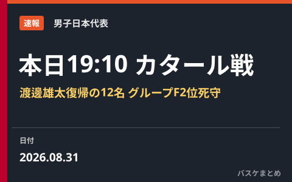

男子日本代表、本日8月31日19:10カタール戦 富樫外れ渡邊雄太が復帰の12名 W杯予選2位死守なるか

男子バスケットボール日本代表は本日8月31日（月）19:10、東京・TOYOTA ARENA TOKYOで「FIBAワールドカップ2027アジア地区予選 Window4」のホームゲームとしてカタール代表と対戦します。日本バスケットボール協会は8月27日に12名のロスターを発表しており、サウジアラビア戦から富樫勇樹が外れ、コンディション不良で欠場していた渡邊雄太が復帰しました。グループFで2位につける日本にとって、首位レバノンとの差を保ちつつ3位・4位を突き放せるかがかかる一戦です。
ロスター発表 富樫が外れ渡邊雄太が復帰
日本バスケットボール協会は8月27日、カタール戦に臨む12名のロスターを発表しました。8月28日のサウジアラビア戦のメンバーから富樫勇樹（千葉ジェッツ）が外れ、コンディション不良で前回メンバー外だった渡邊雄太が復帰。NBA経験者の渡邊雄太・八村塁、Gリーグなど北米で3年目を迎える河村勇輝の3名を含む顔ぶれとなりました。
| ポジション | 選手 |
|---|---|
| PG | 齋藤拓実、河村勇輝、佐々木隆成 |
| SG | 西田優大、富永啓生、髙島紳司 |
| SF | 渡邊雄太、馬場雄大、吉井裕鷹 |
| PF/C | 八村塁、アビィ・シェイファー、ジョシュ・ホーキンソン |
グループF最新順位 日本は2位、首位レバノンと1差
2次ラウンドのグループFは、8月28日のWindow4初戦を終えた時点でレバノンが6勝1敗で首位、日本が5勝2敗で2位、中国とカタールが4勝3敗で並んで3位・4位、サウジアラビアと韓国が3勝4敗という順位です。詳しい経緯は8月29日の順位表まとめで紹介した通りで、日本にとって今回のカタール戦は、直前の中国戦で敗れたカタールとの勝ち点差を広げつつ、首位レバノンとの差を最小限にとどめておきたい一戦となります。
対戦相手カタール、直前の中国戦で黒星
対するカタール代表（FIBAランキング78位）は8月28日の中国戦をアウェーで57-83で落としたばかりで、Window4を白星なしでスタートしています。日本にとっては連勝を伸ばし2位の座を固める好機ですが、カタールにとっても直後の日本戦で勝利できれば5割の成績を保てるだけに、油断のできない一戦になりそうです。
放送・配信は日本テレビ系列とDAZN・TVer
試合はTOYOTA ARENA TOKYOで19:10ティップオフ予定。テレビは日本テレビ系列で19:00から生中継され、配信はDAZNとTVerで視聴できる見込みです。8月28日のサウジアラビア戦での快勝の勢いをホームの声援を受けて維持できるか、そして八村塁・河村勇輝ら主力の仕上がりにも注目が集まります。
Q. カタール戦はどこで見られる？
A. 2026年8月31日（月）19:10ティップオフ予定でTOYOTA ARENA TOKYOにて開催。テレビは日本テレビ系列で19:00から、配信はDAZN・TVerでの生中継が予定されています。
出典：公益財団法人日本バスケットボール協会「2026年度バスケットボール男子日本代表チーム『FIBAバスケットボールワールドカップ2027 アジア地区予選 Window4』8月31日(月) カタール戦 ロスター(12名)発表」／jbasket.jp「【男子日本代表】ワールドカップ2027アジア地区予選 Window4ホームゲーム、8月31日にTOYOTA ARENA TOKYOで開催決定」／spocale「【8月31日】日本代表vsカタール代表の視聴方法」ほか
https://japanbasketball.jp/japan/89448
https://jbasket.jp/日本代表/60540.html
https://spocale.com/blog/japan_vs_qatar_0831/